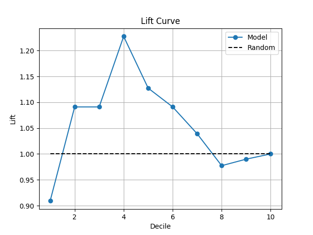
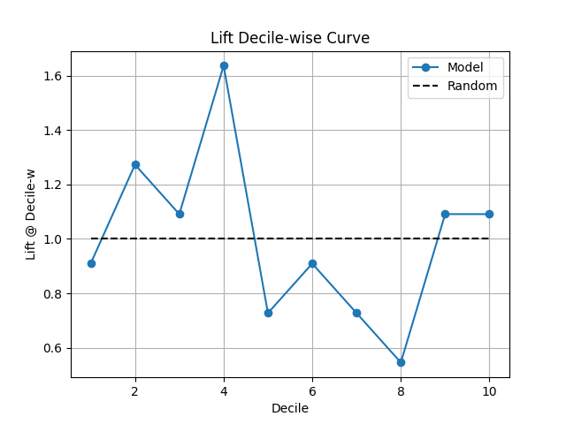
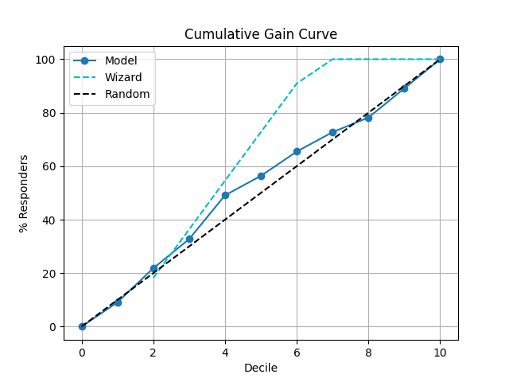
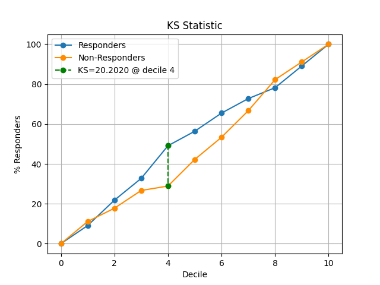
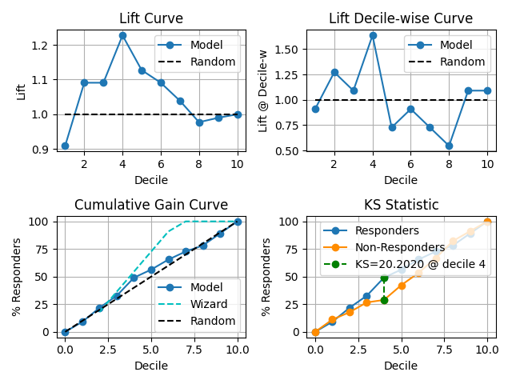
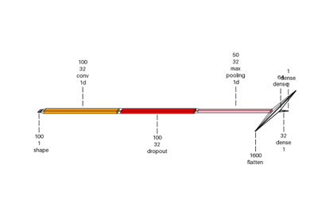

plot_kdsplot_script with examples#
An example showing the kdsplot function
used by a scikit-learn regressor.
9 # Authors: The scikit-plots developers
10 # SPDX-License-Identifier: BSD-3-Clause
Import scikit-plot
14 import scikitplot.snsx as sp
18 import numpy as np; np.random.seed(0) # reproducibility
19 import pandas as pd
20
21 # Create a DataFrame with predictions
22 df = pd.DataFrame({
23 "y_true": np.random.normal(0.5, 0.1, 100).round(),
24 "y_score": np.random.normal(0.5, 0.15, 100),
25 "hue": np.random.normal(0.5, 0.4, 100).round(),
26 })
30 p = sp.kdsplot(df, x="y_true", y="y_score", kind="df", n_deciles=10, round_digits=2)
31 p
35 p = sp.kdsplot(df, x="y_true", y="y_score",kind="lift")

38 p = sp.kdsplot(df, x="y_true", y="y_score",kind="lift_decile_wise")

41 p = sp.kdsplot(df, x="y_true", y="y_score",kind="cumulative_gain")

44 p = sp.kdsplot(df, x="y_true", y="y_score",kind="ks_statistic")

47 p = sp.kdsplot(df, x="y_true", y="y_score",kind="report", verbose=True)

{
"decile": "Ranked group (1=highest probability). Why: shows model discrimination. Fatal if top deciles don't capture positives.",
"prob_min": "Lowest predicted probability in the decile. Why: signals calibration. Fatal if too close to prob_max (model not ranking well).",
"prob_max": "Highest predicted probability in the decile. Why: checks spread. Fatal if overlaps lower deciles (poor separation).",
"prob_avg": "Average predicted probability in the decile. Why: good for calibration curves. Fatal if averages do not increase with decile.",
"cnt_resp": "Number of true responders. Why: measures captured positives. Fatal if counts are flat across deciles (model useless).",
"cnt_resp_total": "Total samples in the decile. Why: denominator for rates. Fatal if deciles differ in size — signals incorrect binning.",
"cnt_resp_non": "Number of non-responders. Why: tracks negatives. Fatal if too high in top deciles (bad ranking).",
"cnt_resp_wiz": "Ideal responders if model was perfect (sorted by actuals). Why: sets maximum benchmark. Fatal if actual is far below this.",
"cnt_resp_rndm": "Expected responders if random. Why: baseline. Fatal if model only slightly above random.",
"rate_resp": "Response rate (cnt_resp / total). Why: decile quality. Fatal if early deciles do not outperform later ones.",
"cum_resp": "Cumulative responders up to decile. Why: shows capture rate. Fatal if curve is too shallow.",
"cum_resp_pct": "Cumulative responder percentage. Why: needed for lift/gain charts. Fatal if curve near random line.",
"cum_resp_total": "Cumulative samples. Why: population coverage. Fatal if distribution biased.",
"cum_resp_total_pct": "Cumulative population percentage. Why: axis for gain/ROC curves. Fatal if deciles unbalanced.",
"cum_resp_non": "Cumulative non-responders. Why: tracks negatives. Fatal if they dominate early deciles.",
"cum_resp_non_pct": "Cumulative non-responder %. Why: used in KS. Fatal if almost same as cum_resp_pct (model fails).",
"cum_resp_wiz": "Cumulative ideal responders. Why: theoretical max. Fatal gap means weak targeting.",
"cum_resp_wiz_pct": "Cumulative % ideal responders. Why: benchmark. Fatal if actual far below.",
"KS": "Kolmogorov-Smirnov statistic. Why: measures max separation. Fatal if very low (<0.2). Strong models often 0.3-0.5.",
"lift": "Cumulative lift vs random. Why: shows model gain. Fatal if <2 in top decile (weak business value)."
}
decile prob_min prob_max ... cum_resp_wiz_pct KS lift
0 1 0.757001 0.857472 ... NaN -2.020202 0.909091
1 2 0.642088 0.731452 ... 18.181818 4.040404 1.090909
2 3 0.602239 0.641672 ... 36.363636 6.060606 1.090909
3 4 0.561119 0.601465 ... 54.545455 20.202020 1.227273
4 5 0.504775 0.559401 ... 72.727273 14.141414 1.127273
5 6 0.446901 0.502622 ... 90.909091 12.121212 1.090909
6 7 0.400478 0.437957 ... 100.000000 6.060606 1.038961
7 8 0.370816 0.398850 ... 100.000000 -4.040404 0.977273
8 9 0.324031 0.363077 ... 100.000000 -2.020202 0.989899
9 10 0.166490 0.316185 ... 100.000000 0.000000 1.000000
[10 rows x 20 columns]
Total running time of the script: (0 minutes 0.777 seconds)
Related examples

Visualkeras: Spam Classification Conv1D Dense Example
Visualkeras: Spam Classification Conv1D Dense Example